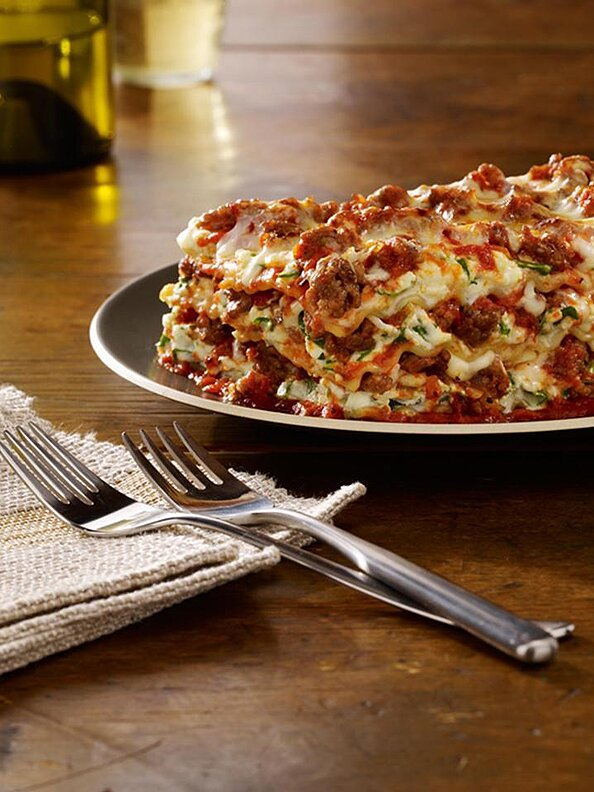

Lasagna

Description
Johnsonville Italian Sausages make it simple to enjoy authentic Italian flavor. This classic lasagna dish is made so much easier when you've got Johnsonville backing you up. The flavor of the Italian sausages will help to make this recipe your new lasagna favorite!
Ingredients
- 1 (16 ounce) package Johnsville® Italian Ground Sausage
- 12 lasagna noodles, cooked and drained
- 1 medium onion, chopped
- 2 garlic cloves, minced
- 4 cups marinara sauce
- 1 teaspoon dried oregano
- 2 (15 ounce) containers ricotta cheese
- 1 egg, beaten
- ½ cup grated Parmesan cheese, divided
- 2 cups fresh spinach, chopped
- 2 cups shredded mozzarella cheese
Steps
- In a skillet, cook sausage, onion and garlic until pork is no longer pink and onion is tender; drain. Add marinara sauce and oregano; simmer for 5 minutes. In a bowl, combine ricotta cheese, egg, 1/4 cup Parmesan and spinach.
- In a greased 13-in. x 9-in. x 2-in. baking dish, spread 1 cup meat sauce. Arrange 3 noodles over sauce. Spread one-fourth of the ricotta cheese mixture over the noodles, top with 1 cup of meat sauce. Sprinkle with 1/2 cup mozzarella cheese. Repeat process 3 times. Top with remaining Parmesan cheese. Bake, uncovered, at 350 degrees F for 40 to 45 minutes. Let stand for 10 minutes before cutting. Serve.
Home